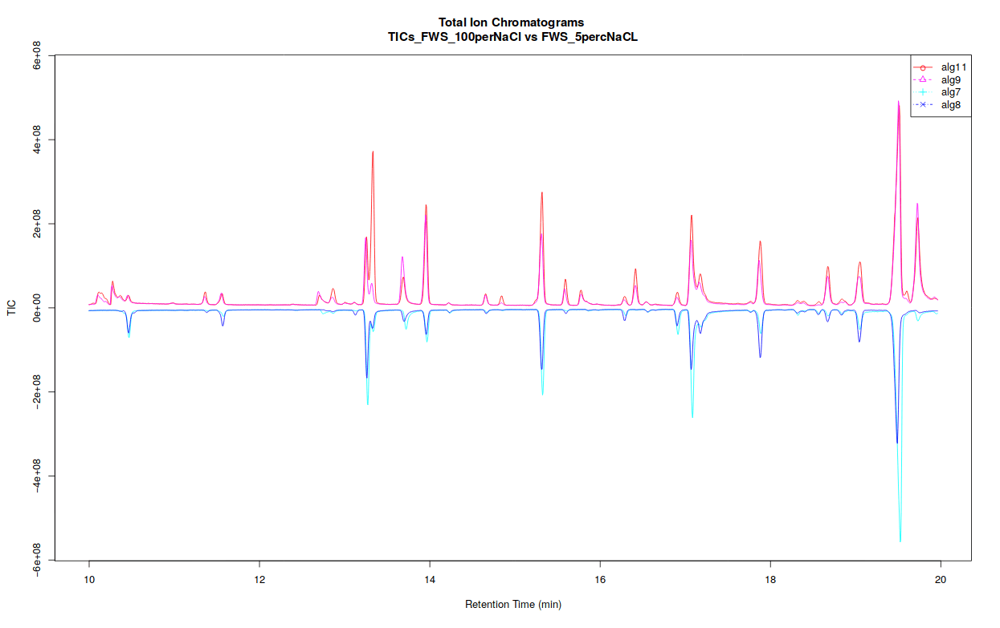

Mass spectrometry: GC-MS analysis with the metaMS package
| Author(s) |
|
| Editor(s) |
|
| Tester(s) |
|
| Reviewers |
|
OverviewQuestions:
Objectives:
What are the main steps for gas chromatography-mass spectrometry (GC-MS) data processing for untargeted metabolomic analysis?
How to conduct metabolomic GC-MS data analysis from preprocessing to annotation using Galaxy?
Requirements:
To confirm you have already comprehend the diversity of MS pre-processing analysis.
To discover the principal functions of the metaMS package for GC-MS data processing available in Galaxy.
To evaluate the potential of two Galaxy-based workflow approaches when dealing with GC-MS metabolomic analysis.
- Introduction to Galaxy Analyses
- tutorial Hands-on: Mass spectrometry: LC-MS analysis
- tutorial Hands-on: Mass spectrometry: GC-MS data processing (with XCMS, RAMClustR, RIAssigner, and matchms)
Time estimation: 2 hoursLevel: Introductory IntroductorySupporting Materials:Published: Sep 22, 2021Last modification: Oct 1, 2025License: Tutorial Content is licensed under Creative Commons Attribution 4.0 International License. The GTN Framework is licensed under MITpurl PURL: https://gxy.io/GTN:T00194rating Rating: 2.5 (0 recent ratings, 2 all time)version Revision: 8
You may already know that there are different types of -omic sciences; out of these, metabolomics is most closely related to phenotypes. Metabolomics involves the study of different types of matrices, such as blood, urine, tissues, in various organisms including plants. It focuses on studying the very small molecules which are called metabolites, to better understand matters linked to the metabolism. However, studying metabolites is not a piece of cake since it requires several critical steps which still have some major bottlenecks. Metabolomics is still quite a young science, and has many kinds of specific challenges.
One of the three main technologies used to perform metabolomic analysis is Gas-Chromatography Mass Spectrometry (GC-MS). Data analysis for this technology requires a large variety of steps, ranging from extracting information from the raw data, to statistical analysis and annotation. Many packages in R/Python are available for the analysis of GC-MS or LC-MS (Liquid-Chromatography Mass Spectrometry) data - for more details see the reviews by Stanstrup et al. 2019 and Misra 2021.
This tutorial explains the main steps involved in untargeted GC-MS data processing. To do so we focus on some open-source solutions integrated within the Galaxy framework, namely XCMS and metaMS. The selected tools and functionalities only covers a small portion of available tools but allow to perform a complete GC-MS analysis in a single environment. In this tutorial, we will learn how to (1) extract features from the raw data using XCMS (Smith et al. 2006), (2) deconvolute the detected features into spectra with metaMS (Wehrens et al. 2014) and (3) annotate unknow spectra using spectral database comparison tools.
To illustrate this approach, we will use data from Dittami et al. 2012. Due to time constraints in processing the original dataset, a limited subset of samples was used to illustrate the workflow. This subset (see details below) demonstrates the key steps of metabolomics analysis, from pre-processing to annotation. Although the results derived from this reduced sample size may not be scientifically robust, they provide insight into essential methodological foundations of GC-MS data-processing workflow.
The objective of the study conducted by Dittami et al. was to investigate the adaptation mechanisms of the brown algae Ectocarpus to low-salinity environments. The research focused on examining physiological tolerance and metabolic changes in freshwater and marine strains of Ectocarpus. Using transcriptomic (gene expression profiling) and metabolic analyses, the authors identified significant, reversible changes occurring in the freshwater strain when exposed to seawater. Both strains exhibited similarities in gene expression under identical conditions; however, substantial differences were observed in metabolite profiles.
The study utilized a freshwater strain of Ectocarpus and a marine strain for comparative analysis. The algae were cultured in media with varying salinities, prepared by diluting natural seawater or adding NaCl. The algae were acclimated to these conditions before extraction.
The six samples used in this training were analyzed by GC-MS (low resolution instrument). A marine strain raised in sea water media (2 replicates) and freshwater strains raised in either 5% or 100% sea water media (2 replicates each). The training dataset is available on Zenodo
To process the GC-MS data, we can use several tools. One of these is XCMS (Smith et al. 2006), a general R package for untargeted metabolomics profiling. It can be used for any type of mass spectrometry acquisition (centroid and profile) and resolution (from low to high resolution), including FT-MS data coupled with a different kind of chromatography (liquid or gas). Because of the generality of packages like XCMS, several other packages have been developed to use the functionalities of XCMS for optimal performance in a particular context. The R package called metaMS (Wehrens et al. 2014) does so for the field of GC-MS untargeted metabolomics. One of the goals of metaMS was to set up a simple system with few user-settable parameters, capable of handling untargeted metabolomics experiments.
In this tutorial we use XCMS to detect chromatographic peaks within our samples. Once we have detected them, they need to be deconvoluted into mass spectra representing chemical compounds. For that, we use metaMS functions. To normalize the retention time of deconvoluted spectra in our sample, we compute the retention index using Alkane references and a dedicated function of metaMS. Finally, we identify detected spectra by aligning them with a database of known compounds. This can be achieved using an in-house built database in the common MSP format (.msp) (used in the NIST MS search program for example), resulting in a table of annotated compounds.
CommentIn Galaxy other GC-MS data processing workflows are available and may be of interest for more advanced Galaxy users (see the Metabolomics section).
AgendaIn this tutorial, we will cover:
Data preparation and prepocessing
Before we can start with the actual analysis pipeline, we first need to download and prepare our dataset. Many of the preprocessing steps can be run in parallel on individual samples. Therefore, we recommend using the Dataset collections in Galaxy. This can be achieved by using the dataset collection option from the beginning of your analysis when uploading your data into Galaxy.
Import the data into Galaxy
Hands On: Upload data
Create a new history for this tutorial
To create a new history simply click the new-history icon at the top of the history panel:
Import the files from Zenodo into a collection:
https://zenodo.org/records/16538501/files/alg11.mzML https://zenodo.org/records/16538501/files/alg2.mzML https://zenodo.org/records/16538501/files/alg3.mzML https://zenodo.org/records/16538501/files/alg7.mzML https://zenodo.org/records/16538501/files/alg8.mzML https://zenodo.org/records/16538501/files/alg9.mzML
- Copy the link location
Click galaxy-upload Upload Data at the top of the tool panel
Click on Collection on the top
- Select galaxy-wf-edit Paste/Fetch Data
Paste the link(s) into the text field
Change Type (set all): from “Auto-detect” to
mzmlPress Start
Click on Build when available
Enter a name for the collection
- input
- Click on Create list (and wait a bit)
Make sure your data is in a collection. You can always manually create the collection from separate files:
- Click on galaxy-selector Select Items at the top of the history panel
- Check all the datasets in your history you would like to include
Click n of N selected and choose Advanced Build List
You are in collection building wizard. Choose Flat List and click ‘Next’ button at the right bottom corner.
Double clcik on the file names to edit. For example, remove file extensions or common prefix/suffixes to cleanup the names.
- Enter a name for your collection
- Click Build to build your collection
- Click on the checkmark icon at the top of your history again
In the further steps, this dataset collection will be referred to as
input(and we recommend naming this collection like that to avoid confusion).Import the following extra files from Zenodo:
https://zenodo.org/record/16538501/files/reference_alkanes.csv https://zenodo.org/record/16538501/files/W4M0004_database_small.msp https://zenodo.org/record/16538501/files/sampleMetadata.tsv
- Copy the link location
Click galaxy-upload Upload Data at the top of the tool panel
- Select galaxy-wf-edit Paste/Fetch Data
Paste the link(s) into the text field
Press Start
- Close the window
Comment: The extra filesThe three additional files contain the reference_alkanes, the W4M0004_database_small, and the sampleMetadata. Those files are auxiliary inputs used in the data processing and contain either extra information about the samples or serve as reference data for indexing and identification.
The reference_alkanes (
.tsvor.csv) with retention times and carbon number or retention index is used to compute the retention index of the deconvoluted peaks. The alkanes should be measured in the same batch as the input sample collection.The W4M0004_database_small (
.msp) is a reference database used for the identification of spectra. It contains the recorded and annotated mass spectra of chemical standards, ideally from a similar instrument. The unknown spectra which can be detected in the sample can then be confirmed via comparison with this library. The specific library is an in-house library of metabolite standards extracted with metaMS .The sample metadata (
.csvor.tsv) is a table containing information about our samples. In particular, the tabular file contains for each sample its associated sample name, class (SW, FWS, etc.). It is possible to add more columns to include additional details about the samples (e.g : batch number, injection order…).


As a result of this step, you should have in our history a green Dataset collection param-collection with all 6 samples .mzML files as well as three separate files with reference alkanes, reference spectral library, and sample metadata.
Create the XCMS object
The first part of data processing is using the XCMS tool to detect peaks in the MS signal. For that, we first need to take the .mzML files and create a format usable by the XCMS tool. MSnbase readMSData ( Galaxy version 2.16.1+galaxy0) (Gatto and Lilley 2012. Gatto et al. 2020) takes as input our files and prepares RData files for the first XCMS step.
CommentThe MSnbase readMSData tool function, prior to XCMS, is able to read files with open format as
mzXML,mzML,mzDataandnetCDF, which are independent of the manufacturers’ proprietary formats. Working with open MS data file format allows users to us tools developed outside of the MS instrument provider. This set of packages/functions gives modularity, and thus is particularly well adapted to define workflows, one of the key points of Galaxy.
Hands On: Create the XCMS object
- MSnbase readMSData ( Galaxy version 2.16.1+galaxy0) with the following parameters:
- param-collection “File(s) from your history containing your chromatograms”:
input
- Click on param-collection Dataset collection in front of the input parameter you want to supply the collection to.
- Select the collection you want to use from the list
The output should be
input.raw.RDataThis dataset is a collection of
rdata.msnbase.rawfiles. ThatRdatafile is necessary in the next step of the workflow. It contains an internal R representation of XCMS objects.
As a result of this step, you should have in your history a new green dataset collection called input.raw.RData that will serve as input for the next processing step: peak picking.
Peak detection using XCMS
The first step in the workflow is to detect the peaks in our data using XCMS functions. This part, however, is covered by a separate tutorial. Although the tutorial is dedicated to LC-MS data, it can also be followed for our GC-MS data. Therefore, in this section, we do not explain this part of the workflow in detail but rather refer the reader to the dedicated tutorial. Please also pay attention to the parameter values for individual Galaxy tools, as these can differ from the referred tutorial and are adjusted to our GC-MS dataset.
Since this step is already covered in a separate tutorial, it is possible to skip it. Instead, you can go directly to Peak deconvolution step using a preprocessed XCMS object file prepared for you.
Hands On: Upload data
Import the following files from Zenodo:
https://zenodo.org/records/16538501/files/xset.merged.RData
- Copy the link location
Click galaxy-upload Upload Data at the top of the tool panel
- Select galaxy-wf-edit Paste/Fetch Data
Paste the link(s) into the text field
Press Start
- Close the window
The format of uploaded file containing XCMS object should be
.RData.
- Allow Galaxy to detect the datatype during Upload, and adjust from there if needed.
- Tool forms will filter for the appropriate datatypes it can use for each input.
- Directly changing a datatype can lead to errors. Be intentional and consider converting instead when possible.
- Dataset content can also be adjusted (tools: Data manipulation) and the expected datatype detected. Detected datatypes are the most reliable in most cases.
- If a tool does not accept a dataset as valid input, it is not in the correct format with the correct datatype.
- Once a dataset’s content matches the datatype, and that dataset is repeatedly used (example: Reference annotation) use that same dataset for all steps in an analysis or expect problems. This may mean rerunning prior tools if you need to make a correction.
- Tip: Not sure what datatypes a tool is expecting for an input?
- Create a new empty history
- Click on a tool from the tool panel
- The tool form will list the accepted datatypes per input
- Warning: In some cases, tools will transform a dataset to a new datatype at runtime for you.
- This is generally helpful, and best reserved for smaller datasets.
- Why? This can also unexpectedly create hidden datasets that are near duplicates of your original data, only in a different format.
- For large data, that can quickly consume working space (quota).
- Deleting/purging any hidden datasets can lead to errors if you are still using the original datasets as an input.
- Consider converting to the expected datatype yourself when data is large.
- Then test the tool directly on converted data. If it works, purge the original to recover space.
The first step (called peak picking) is to extract peaks from each of your data files independently. For this purpose, we use the MatchedFilter chromatographic peak detection algorithm implemented in xcms findChromPeaks (xcmsSet) ( Galaxy version 3.12.0+galaxy0).
One Galaxy Training material already explains how to act with MS data. We encourage you to follow this link and complete the corresponding tutorial: Mass spectrometry: LC-MS preprocessing with XCMS. For GC-MS analysis you don’t really need to follow all of this previous tutorial but for a better understanding of your data, it is recommended to try it with their test dataset. Concerning the current GC-MS tutorial, you just have to compute the following steps and specific parameters described in the hands-on part below (please follow the parameter values below to obtain the same results during the training).
Hands On: Peak picking of GC-MS data with XCMS
- xcms findChromPeaks (xcmsSet) ( Galaxy version 3.12.0+galaxy0) with the following parameters:
- param-collection “RData file”:
input.raw.RData(the output collection of files from the MSnbase readMSData tool step)- “Extraction method for peaks detection”:
MatchedFilter - peak detection in chromatographic space
- “Full width at half maximum of matched filtration gaussian model peak”:
5- “Step size to use for profile generation”:
0.5- In “Advanced Options”:
- “Maximum number of peaks that are expected/will be identified per slice”:
500- “Signal to Noise ratio cutoff”:
2- “Minimum difference in m/z for peaks with overlapping Retention Times”:
0.5CommentFor GC-MS data in profile mode, use the MatchedFilter algorithm instead of the CentWave algorithm used in the LC-MS tutorial. For low-resolution GC-MS data, a larger m/z difference (0.5 Da) can be used to separate overlapping peaks. If you have high-resolution data (from GC-ToF or GC-Orbitrap), you can use a smaller m/z difference (0.01 Da).
- xcms findChromPeaks Merger ( Galaxy version 3.12.0+galaxy0) with the following parameters:
- param-collection “RData file”:
input.raw.xset.RData(output collection of files from the xcms findChromPeaks (xcmsSet) tool job)- param-file “Sample metadata file “:
sampleMetadata.tsv(One of the uploaded files from Zenodo)CommentTo merge your data, you need to input a sampleMetadata file containing filenames and their metadata informations like their class for example. If you don’t add a sampleMetadata file, the xcms findChromPeaks Merger tool tool will group all your files together. You can also create your sampleMetadata file with W4M Galaxy tool xcms get a sampleMetadata file ( Galaxy version 3.12.0+galaxy3) with the following parameters: param-collection “RData file”:
input.raw.RDataoutput from MSnbase readMSData tool. Here is an example of the minimum expectations about a sampleMetadata file (important: remove file extension from the sample names, file1.mzML should be file1):
sample_name class file1 marine strain file2 pool file3 freshwater strain
The output from xcms findChromPeaks Merger tool is an .RData file required for the next steps of the process.
There are two available options:
- using the metaMS strategy specifically designed for GC-MS data deconvolution and annotation
- using a full XCMS process for GC-MS data processing
Although this training material is dedicated to GC-MS analysis with the metaMS package, the two options are illustrated in this tutorial. Indeed, as mentioned in the introduction, metaMS is based on XCMS functions, with a specific adaptation to GC-MS data. Thus, one can be interested in comparing results that would be obtained with a standard XCMS processing. Consequently, the two options on the same dataset are available here.
Hands-on: Choose Your Own TutorialThis is a "Choose Your Own Tutorial" (CYOT) section (also known as "Choose Your Own Analysis" (CYOA)), where you can select between multiple paths. Click one of the buttons below to select how you want to follow the tutorial
Choose below if you just want to follow the pipeline using metaMS or XCMS for GC-MS deconvolution and annotation
Process GC-MS data with a full XCMS workflow (option 2)
This option follows the standard XCMS workflow with GC-MS data as start to obtain in the end a dataMatrix file and its corresponding variableMetadata file. The main difference with the option 1 is that the dataMatrix file will contain individual peaks rather than pseudo-spectra, and the variableMetadata file will contain information about each peak, such as its retention time, m/z, and intensity. No .msp file will be generated in this case, as the peaks are not grouped into pseudo-spectra so the annotation process will be different.
Hands On: Example untargeted GC-MS data processing with the standard XCMS workflow
- xcms groupChromPeaks (group) ( Galaxy version 3.12.0+galaxy0) with the following parameters:
- param-file “RData file”:
xset.merged.RData(output of the xcms findChromPeaks Merger tool job)- “Method to use for grouping”:
PeakDensity - peak grouping based on time dimension peak densities
- “Bandwidth”:
5.0- “Width of overlapping m/z slices”:
0.5- xcms fillChromPeaks (fillPeaks) ( Galaxy version 3.12.0+galaxy0) with the following parameters:
- param-file “RData file”:
xset.merged.groupChromPeaks.RData(output of the xcms groupChromPeaks (group) tool job)- In “Peak List”:
- “Convert retention time (seconds) into minutes”:
Yes- “Number of decimal places for retention time values reported in ions’ identifiers.”:
2- “Reported intensity values”:
maxoCommentAfter the XCMS processing, the extraction of the MSP-formated spectra can be done using RAMclustRtool tool (See this GTN on GC-MS data processing with XCMS, RAMClustR, RIAssigner, and matchms).
The outputs of this strategy are similar to the ones described in the LC-MS tutotial mentioned previously.
To recap your option 2 journey, here are some questions to check the outcomes of your hands-on:
Question: getting an overview of your GC-MS processing steps1 - What are the XCMS steps you made in order to obtain your final file RData file?
Here are the different steps made through this tutorial:
- (Not with XCMS) import of the data into the Galaxy instance
- MSNbase readMSData tool to read and prepare the MS data for the extraction step
- XCMS peak picking with the xcms findChromPeaks (xcmsSet) tool tool
- (Not directly XCMS processing, but necessary in the Galaxy tool suit) merge my data into one file with xcms findChromPeaks Merger tool tool
- XCMS grouping with the xcms groupChromPeaks (group) tool tool
- XCMS integration of missing peaks with xcms fillChromPeaks (fillPeaks) tool tool
2 - What is the complete name of your final RData file?During each step of the XCMS pre-processing, the name of the file which is processed is completed by the name of the step you used. So, finally your file should be named
xset.merged.groupChromPeaks.fillChromPeaks.RData. That means (as seen in the previous question) you have run the findChromPeaks (xcmsSet) step, then a merge, a grouping and finally the filling of missing data.
Verify your data after the pre-processing and clean datasets
The xcms plot chromatogram ( Galaxy version 3.12.0+galaxy3) part allows users to display the TIC (Total Ion Chromatogram) and the BPC (Base Peak Chromatogram).
If you separated your samples into different classes, this tool can constructs TICs and BPCs one class against one class, in a pdf file (see bellow).

Open image in new tabThe xcms plot chromatogram ( Galaxy version 3.12.0+galaxy3) part allows users to display the TIC (Total Ion Chromatogram) and the BPC (Base Peak Chromatogram).
When you have processed all or only needed steps described before, you can continue the processing of your data with statistics or annotation tools. Don’t forget to always check your files’ format for compatibility with further analysis!
The pre-processing part of this analysis can be quite time-consuming, and already corresponds to quite a few number of steps, depending of your analysis. If you plan to proceed with further steps in Galaxy (statistics for example), we highly recommend, at this step of the GC-MS workflow, to split your analysis by beginning a new Galaxy history with only the files you need for further steps (that would be the final
.tsvmatrices - sampleMetadata, variableMetadata, dataMatrix - and the.mspspectral database). This will help you in limiting the chance to select the wrong dataset in further analysis, and bring a little tidiness for future review of your analysis process. This would also enable you to make alternative extractions in the future (by adjusting peak picking parameters) in the same history, without drowning your statistical analysis steps far bellow.To begin a new history with the files from your current history, you can use the functionality ‘copy dataset’ and copy it into a new history.
There 3 ways to copy datasets between histories
From the original history
- Click on the galaxy-gear icon which is on the top of the list of datasets in the history panel
- Click on Copy Datasets
Select the desired files
Give a relevant name to the “New history”
- Validate by ‘Copy History Items’
- Click on the new history name in the green box that have just appear to switch to this history
Using the galaxy-columns Show Histories Side-by-Side
- Click on the galaxy-dropdown dropdown arrow top right of the history panel (History options)
- Click on galaxy-columns Show Histories Side-by-Side
- If your target history is not present
- Click on ‘Select histories’
- Click on your target history
- Validate by ‘Change Selected’
- Drag the dataset to copy from its original history
- Drop it in the target history
From the target history
- Click on User in the top bar
- Click on Datasets
- Search for the dataset to copy
- Click on its name
- Click on Copy to current History
You may have notice that the XCMS tools generate output names that contain the different XCMS steps you used, allowing easy traceability while browsing your history. Hence, when begining further processing steps (as statistics), we highly recommend you (in particular if you have used the option 2) to first rename your datasets with something short, e.g. “dataMatrix”, “variableMetadata”, or anything not too long that you may find convenient.
- Click on the galaxy-pencil pencil icon for the dataset to edit its attributes
- In the central panel, change the Name field
- Click the Save button
Warning: Be careful of the file formatDuring each step of pre-processing, your dataset has its formats changed and can have also its name changed. To be able to proceed with GC-MS processing with metaMS, you need to identify which datasets can be used with which tool. For example to be able to use runGC function you need to have an RData object which is at least merged (output from xcms findChromPeaks Merger tool). After following the option 1 steps you obtained tabular files that can be used in a large variety of analyses, as well as an MSP file (if option 1 was used). Always check the format needed for further tools, as these format are ‘text format’ but with characteristics that may matter in further steps. With option 2, if you want to process your data with XCMS or other tools you may also have to align them with xcms groupChromPeaks (group) tool. It means that you should have at least a file named
xset.merged.RDatato be able to continue XCMS processing.
Conclusion
trophy Well done, you’ve processed GC-MS data with metaMS (option 1) or all with XCMS (option 2)! You might want to explore other Galaxy trainings for Metabolomics
You might want to consult your results with the key history option 1 or use the workflow for option 1 associated with this tutorial.
You've Finished the Tutorial
Key points
To process untargeted GC-MS metabolomic data preprocessing, you need a large variety of steps and tools.
Although main steps are standard, various ways to combine and to set parameters for tools exist, depending on your data.
Resources are available in Galaxy, but do not forget that you need appropriate knowledge to perform a relevant analysis.
Frequently Asked Questions
Have questions about this tutorial? Have a look at the available FAQ pages and support channelsReferences
- Stein, S. E., and D. R. Scott, 1994 Optimization and testing of mass spectral library search algorithms for compound identification. Journal of the American Society for Mass Spectrometry 5: 859–866. 10.1016/1044-0305(94)87009-8
- J., K., S. N., K. S., B. C., U. B. et al., 2005 GMD@CSB.DB: the Golm Metabolome Database. Bioinformatics 21: 1635–1638. 10.1093/bioinformatics/bti236 http://gmd.mpimp-golm.mpg.de/
- Smith, C. A., E. J. Want, G. O’Maille, R. Abagyan, and G. Siuzdak, 2006 XCMS: Processing Mass Spectrometry Data for Metabolite Profiling Using Nonlinear Peak Alignment, Matching, and Identification. Analytical Chemistry 78: 779–787. 10.1021/ac051437y
- Horai, H., M. Arita, S. Kanaya, Y. Nihei, T. Ikeda et al., 2010 MassBank: a public repository for sharing mass spectral data for life sciences. Journal of Mass Spectrometry 45: 703–714. 10.1002/jms.1777 https://analyticalsciencejournals.onlinelibrary.wiley.com/doi/abs/10.1002/jms.1777
- Dittami, S. M., A. Gravot, S. Goulitquer, S. Rousvoal, A. F. Peters et al., 2012 Towards deciphering dynamic changes and evolutionarymechanisms involved in the adaptation to low salinities inEctocarpus(brown algae). The Plant Journal 71: 366–377. 10.1111/j.1365-313X.2012.04982.x
- Gatto, L., and K. S. Lilley, 2012 MSnbase-an R/Bioconductor package for isobaric tagged mass spectrometry data visualization, processing and quantitation. Bioinformatics 28: 288–289. 10.1093/bioinformatics/btr645
- Wehrens, R., G. Weingart, and F. Mattivi, 2014 metaMS: An open-source pipeline for GC-MS-based untargeted metabolomics. Journal of Chromatography B 966: 109–116. 10.1016/j.jchromb.2014.02.051
- Stanstrup, J., C. Broeckling, R. Helmus, N. Hoffmann, E. Mathé et al., 2019 The metaRbolomics Toolbox in Bioconductor and beyond. Metabolites 9: 200. 10.3390/metabo9100200 https://www.mdpi.com/2218-1989/9/10/200
- Gatto, L., S. Gibb, and J. Rainer, 2020 MSnbase, efficient and elegant R-based processing and visualization of raw mass spectrometry data. Journal of Proteome Research 20: 1063–1069. 10.1021/acs.jproteome.0c00313
- Misra, B. B., 2021 New software tools, databases, and resources in metabolomics: updates from 2020. Metabolomics 17: 49. 10.1007/s11306-021-01796-1 ISBN: 0123456789
Feedback
Did you use this material as an instructor? Feel free to give us feedback on how it went.
Did you use this material as a learner or student? Click the form below to leave feedback.

Citing this Tutorial
- Julien Saint-Vanne, Yann Guitton, Mass spectrometry: GC-MS analysis with the metaMS package (Galaxy Training Materials). https://training.galaxyproject.org/training-material/topics/metabolomics/tutorials/gcms/tutorial.html Online; accessed TODAY
- Hiltemann, Saskia, Rasche, Helena et al., 2023 Galaxy Training: A Powerful Framework for Teaching! PLOS Computational Biology 10.1371/journal.pcbi.1010752
- Batut et al., 2018 Community-Driven Data Analysis Training for Biology Cell Systems 10.1016/j.cels.2018.05.012
@misc{metabolomics-gcms, author = "Julien Saint-Vanne and Yann Guitton", title = "Mass spectrometry: GC-MS analysis with the metaMS package (Galaxy Training Materials)", year = "", month = "", day = "", url = "\url{https://training.galaxyproject.org/training-material/topics/metabolomics/tutorials/gcms/tutorial.html}", note = "[Online; accessed TODAY]" } @article{Hiltemann_2023, doi = {10.1371/journal.pcbi.1010752}, url = {https://doi.org/10.1371%2Fjournal.pcbi.1010752}, year = 2023, month = {jan}, publisher = {Public Library of Science ({PLoS})}, volume = {19}, number = {1}, pages = {e1010752}, author = {Saskia Hiltemann and Helena Rasche and Simon Gladman and Hans-Rudolf Hotz and Delphine Larivi{\`{e}}re and Daniel Blankenberg and Pratik D. Jagtap and Thomas Wollmann and Anthony Bretaudeau and Nadia Gou{\'{e}} and Timothy J. Griffin and Coline Royaux and Yvan Le Bras and Subina Mehta and Anna Syme and Frederik Coppens and Bert Droesbeke and Nicola Soranzo and Wendi Bacon and Fotis Psomopoulos and Crist{\'{o}}bal Gallardo-Alba and John Davis and Melanie Christine Föll and Matthias Fahrner and Maria A. Doyle and Beatriz Serrano-Solano and Anne Claire Fouilloux and Peter van Heusden and Wolfgang Maier and Dave Clements and Florian Heyl and Björn Grüning and B{\'{e}}r{\'{e}}nice Batut and}, editor = {Francis Ouellette}, title = {Galaxy Training: A powerful framework for teaching!}, journal = {PLoS Comput Biol} }
Funding
These individuals or organisations provided funding support for the development of this resource
Congratulations on successfully completing this tutorial!

You can use Ephemeris's
shed-tools installcommand to install the tools used in this tutorial.shed-tools install [-g GALAXY] [-a API_KEY] -t <(curl https://training.galaxyproject.org/training-material/api/topics/metabolomics/tutorials/gcms/tutorial.json | jq .admin_install_yaml -r)Alternatively you can copy and paste the following YAML
--- install_tool_dependencies: true install_repository_dependencies: true install_resolver_dependencies: true tools: - name: msnbase_readmsdata owner: lecorguille revisions: 11ab2081bd4a tool_panel_section_label: Metabolomics tool_shed_url: https://toolshed.g2.bx.psu.edu/ - name: xcms_export_samplemetadata owner: lecorguille revisions: e13c7bc91c63 tool_panel_section_label: Metabolomics tool_shed_url: https://toolshed.g2.bx.psu.edu/ - name: xcms_fillpeaks owner: lecorguille revisions: 26d77e9ceb49 tool_panel_section_label: Metabolomics tool_shed_url: https://toolshed.g2.bx.psu.edu/ - name: xcms_group owner: lecorguille revisions: d45a786cbc40 tool_panel_section_label: Metabolomics tool_shed_url: https://toolshed.g2.bx.psu.edu/ - name: xcms_merge owner: lecorguille revisions: 5bd125a3f3b0 tool_panel_section_label: Metabolomics tool_shed_url: https://toolshed.g2.bx.psu.edu/ - name: xcms_plot_chromatogram owner: lecorguille revisions: 9291271ec4d9 tool_panel_section_label: Metabolomics tool_shed_url: https://toolshed.g2.bx.psu.edu/ - name: xcms_xcmsset owner: lecorguille revisions: b02d1992a43a tool_panel_section_label: Metabolomics tool_shed_url: https://toolshed.g2.bx.psu.edu/ - name: metams_rungc owner: yguitton revisions: 93508ea69eb5 tool_panel_section_label: Metabolomics tool_shed_url: https://toolshed.g2.bx.psu.edu/